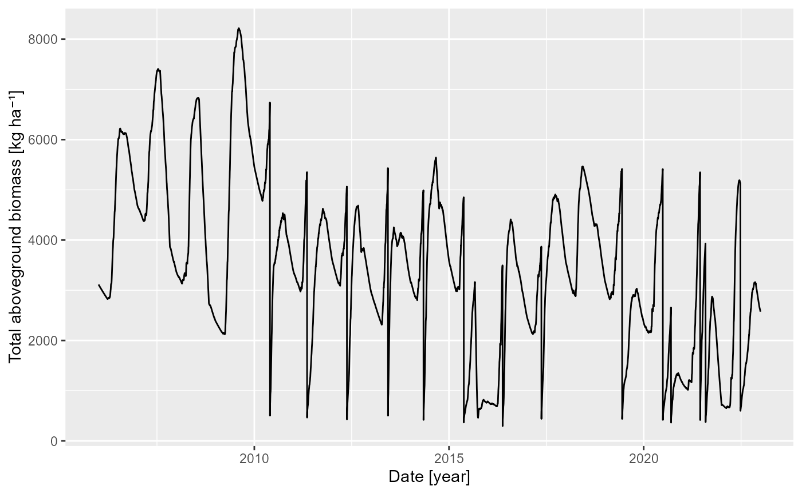

Vignette Title
Vignette Author
2025-02-26
home.RmdLoad GrasslandTraitSim
library(dplyr)
library(ggplot2)
# install with devtools::install_github("FelixNoessler/RGrasslandTraitSim")
library(RGrasslandTraitSim)
## Initialisation: Install Julia and GrasslandTraitSim.jl on first run
GrasslandTraitSim_init()Get and change model parameter
### without changing parameter values:
# GrasslandTraitSim_parameter()
### Change some parameters
p <- c("α_SEN" = 0.02, "η_GRZ" = 2.5, "ψ_SEN_ST2" = 3200.0)
p_obj <- GrasslandTraitSim_parameter(p)
p_obj## Julia Object of type GrasslandTraitSim.SimulationParameter{Float64, Quantity{Float64, 𝐓^2 𝐋^-2, Unitful.FreeUnits{(kg, MJ^-1), 𝐓^2 𝐋^-2, nothing}}, Quantity{Float64, 𝐌 𝐋^-2, Unitful.FreeUnits{(ha^-1, kg), 𝐌 𝐋^-2, nothing}}, Quantity{Float64, 𝐋^2 𝐌^-1, Unitful.FreeUnits{(g^-1, m^2), 𝐋^2 𝐌^-1, nothing}}, Quantity{Float64, 𝐌 𝐋^-2, Unitful.FreeUnits{(g, m^-2), 𝐌 𝐋^-2, nothing}}, Quantity{Float64, NoDims, Unitful.FreeUnits{(g, kg^-1), NoDims, nothing}}, Quantity{Float64, 𝐓^2 𝐌^-1, Unitful.FreeUnits{(ha, MJ^-1), 𝐓^2 𝐌^-1, nothing}}, Quantity{Float64, 𝐌 𝐓^-2, Unitful.FreeUnits{(ha^-1, MJ), 𝐌 𝐓^-2, nothing}}, Quantity{Float64, 𝚯, Unitful.FreeUnits{(K,), 𝚯, Unitful.Affine{-5463//20}}}, Quantity{Float64, 𝐌, Unitful.FreeUnits{(kg,), 𝐌, nothing}}, Quantity{Float64, 𝐋, Unitful.FreeUnits{(m,), 𝐋, nothing}}, Quantity{Float64, 𝐋^3 𝐌^-1, Unitful.FreeUnits{(g^-1, cm^3), 𝐋^3 𝐌^-1, nothing}}}.
## ┌──────────────┬────────────────────┐
## │ Parameter │ Value │
## ├──────────────┼────────────────────┤
## │ ϕ_TRSA │ 0.0683575 m^2 g^-1 │
## │ ϕ_TAMC │ 0.108293 │
## │ ϕ_sla │ 0.008808 m^2 g^-1 │
## │ γ_RUEmax │ 0.003 kg MJ^-1 │
## │ γ_RUE_k │ 0.6 │
## │ α_RUE_cwmH │ 0.998592 │
## │ β_LIG_H │ NaN │
## │ α_WAT_rsa05 │ 0.822698 │
## │ β_WAT_rsa │ 8.12609 │
## │ δ_WAT_rsa │ 1.60378 g m^-2 │
## │ α_NUT_Nmax │ 35.0 g kg^-1 │
## │ α_NUT_TSB │ 5001.26 kg ha^-1 │
## │ α_NUT_maxadj │ 10.0 │
## │ α_NUT_amc05 │ 0.700429 │
## │ α_NUT_rsa05 │ 0.959764 │
## │ β_NUT_rsa │ 8.13689 │
## │ β_NUT_amc │ 15.9892 │
## │ δ_NUT_rsa │ 10.3304 g m^-2 │
## │ δ_NUT_amc │ 15.0 │
## │ κ_ROOT_amc │ 0.0723991 │
## │ κ_ROOT_rsa │ 0.00761945 │
## │ γ_RAD1 │ 4.45e-6 ha MJ^-1 │
## │ γ_RAD2 │ 50000.0 MJ ha^-1 │
## │ ω_TEMP_T1 │ 4.0 °C │
## │ ω_TEMP_T2 │ 10.0 °C │
## │ ω_TEMP_T3 │ 20.0 °C │
## │ ω_TEMP_T4 │ 35.0 °C │
## │ ζ_SEA_ST1 │ 787.414 °C │
## │ ζ_SEA_ST2 │ 1800.0 °C │
## │ ζ_SEAmin │ 0.987514 │
## │ ζ_SEAmax │ 2.44419 │
## │ α_SEN │ 0.02 │
## │ β_SEN_sla │ 1.41955 │
## │ ψ_SEN_ST1 │ 1765.52 °C │
## │ ψ_SEN_ST2 │ 3200.0 °C │
## │ ψ_SENmax │ 1.55784 │
## │ β_GRZ_lnc │ 0.578292 │
## │ β_GRZ_H │ 0.0563242 │
## │ η_GRZ │ 2.5 │
## │ κ_GRZ │ 22.0 kg │
## │ ϵ_GRZ_minH │ 0.05 m │
## │ β_SND_WHC │ 0.5678 │
## │ β_SLT_WHC │ 0.9228 │
## │ β_CLY_WHC │ 0.9135 │
## │ β_OM_WHC │ 0.6103 │
## │ β_BLK_WHC │ -0.2696 cm^3 g^-1 │
## │ β_SND_PWP │ -0.0059 │
## │ β_SLT_PWP │ 0.1142 │
## │ β_CLY_PWP │ 0.5766 │
## │ β_OM_PWP │ 0.2228 │
## │ β_BLK_PWP │ 0.02671 cm^3 g^-1 │
## └──────────────┴────────────────────┘Run simulation
sol_obj <- GrasslandTraitSim_solve(p = p_obj, plotID = "HEG37")Analyse results
total_biomass <- GrasslandTraitSim_getdata(sol_obj$output$biomass)
above_biomass <- GrasslandTraitSim_getdata(sol_obj$output$above_biomass)
df <- tibble(above_biomass = rowSums(above_biomass),
d = sol_obj$simp$output_date)
ggplot(df, aes(d, above_biomass)) +
geom_line() +
labs(y = "Total aboveground biomass [kg ha⁻¹]",
x = "Date [year]")